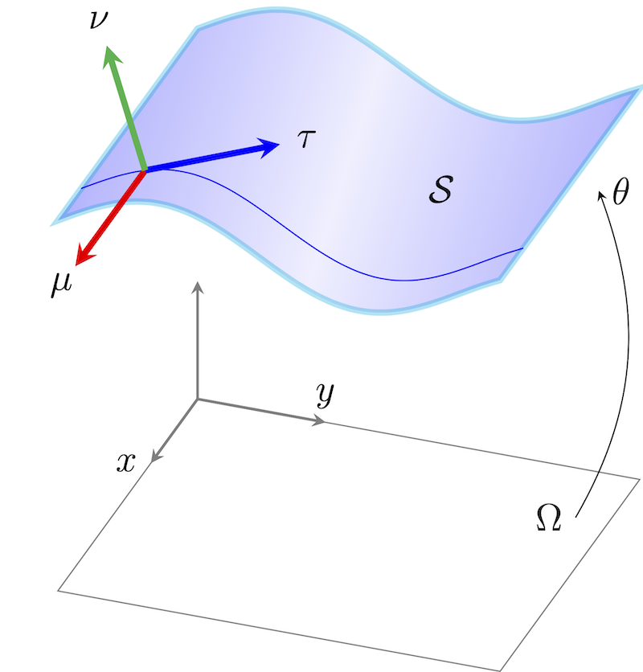
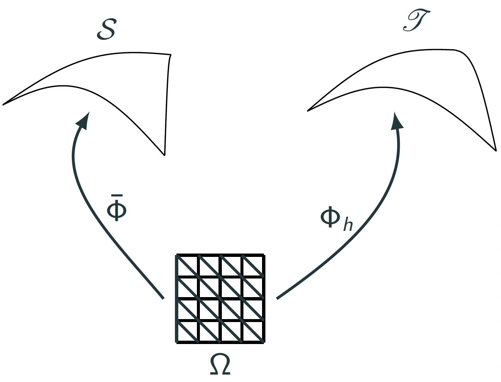

22. Analysis of the generalized and lifted shape operator#
In this notebook we will provide a proof roadmap on how to rigorously analyze the generalized and lifted Weingarten tensor using numerical analysis and derive convergence rates. We follow [Gopalakrishnan, Neunteufel. Analysis of the generalized shape operator for surfaces (in preparation)].
22.1. The comparison problem#
The exact shape operator and the discrete lifted shape operator do not naturally live on the same surface. Also, there are several difficulties we have to take care of:
\(W\) lives on the smooth surface \(\mathcal S\),
\(\kappa_h\) lives on the discrete surface \(\mathcal S_h\),
the generalized operator is a distributional functional,
the involved quantities (e.g. the signed dihedral angle) are highly nonlinear.
During the analysis we need to compare functionals across changing geometries.
{kind=link}

22.2. Step 1: connect the two surfaces by interpolation of embeddings#
Introduce a family of embeddings
where \(\bar{\Phi}_h:\hat{\Omega}\to\mathcal{S}\) and \(\Phi_h:\hat{\Omega}\to\mathcal{S}_h\) are the embeddings of the exact and approximated surface living on the same reference/parameter domain \(\hat{\Omega}\subset \mathbb{R}^2\).
{kind=link}

This connects the exact triangulated surface to the discrete surface. The error is then written with the fundamental theorem of calculus into an integral formulation
Note, that \(\tilde{\bar{W}}_h(\sigma) = \int_{\mathcal{S}}\bar{W}:\sigma\).
It is important to note, that we have to pull back all quantities back to the common parameter domain \(\hat{\Omega}\), including the test functions \(\sigma\) in the Hellan-Herrmann-Johnson space.
Thus, in a first intermediate step, we need to investigate how the generalized Weingarten tensor behaves, if the surface (more precisely its embedding) varies.
22.3. Step 2: Linearization#
Denote with \(\hat X=\frac{d}{dt}\Phi_h^t\) the perturbation vector of the surface and define \(X_t\circ\Phi_h^t=\hat{X}\). Further, define \(F=\hat{\nabla} \hat X\), \(J=\sqrt{\det(F^TF)}\).
Similar to shape optimization techniques, we can compute how the involved quantities change:
Thus, we derive at the following linearization of the generalized shape operator
with \(X=\dot{X}\):
where with \(\mathcal{H}_{\nu}(X) = \sum_{i=1}^3\mathrm{hesse}(X_i)\nu_i\)
The first bilinear form, \(a(\cdot;\cdot,\cdot)\) only contains first derivatives of \(X\) and the boundary term involving \(X\) is single-valued. The second bilinear for \(b(\cdot;\cdot,\cdot)\) contains bending-type terms involving second derivatives of \(X\) and is closely related to the HHJ method for Kirchhoff-Love shell bending. That is the analytic echo of the finite element choice and will be exploited in the numerical analysis.
22.4. Step 3: pull everything back#
As motivated above we need to transform both bilinear forms back to the parameter domain \(\hat \Omega\) to perform the analysis.
Above, we used the notation of the Christoffel symbols of second kind: \({\Gamma}^{\alpha}_{\beta\gamma} = \sum_{\ell=1}^3F^{\dagger}_{\alpha\ell}\hat{\nabla}_{\beta}F_{\ell \gamma}\). Further, \(\hat{S}=\sum_{i=1}^3\nu_i\circ\Phi\hat{\nabla}^2 \Phi_i\) arises from the pull-back of the Weingarten tensor \(\nabla_{\mathcal{S}}\nu\circ\Phi = F^{\dagger^T}\hat{S} F^{\dagger}\). The HHJ test function \(\sigma\) is transformed by the double Piola transformation \({\sigma}\circ\Phi = J^{-2}F{\hat{\sigma}} F^T\) and the normal vector reads \(\nu\circ\Phi = J^{-1}F_1\times F_2\).
22.5. Analysis of generalized shape operator#
The \(H^{-1}\)-norm is well-suited for the analysis of the generalized shape operator as it consists of volume and codimension 1 facet (edge) contributions. Thus we will estimate
by estimating the integrand, which are sufficiently linear to perform numerical analysis. Goal: estimate to get \(|a(\Phi_t;X_t,\sigma_t)|\le C \|\hat X\|\|\hat \sigma\|_{H^1}\) and \(|b(\Phi_t;X_t,\sigma_t)|\le C \|\hat X\|\|\hat \sigma\|_{H^1}\) with the weakest norm for \(\hat X\) as possible as \(\hat X=\Phi_h-\bar{\Phi}_h\) gives the convergence.
It is crucial to carefully estimate the involved nonlinear terms. For example one can proof for the signed dihedral angle that
We arrive at the following result Let \((\Phi_h)_{h>0}\in\mathrm{Lag}^k_h\) be a family of embeddings such that \(\|\Phi_h-\bar{\Phi}_h\|_{W^{1,\infty}}\!\to\! 0\). Then there holds
If the embedding \(\Phi_h\) has optimal approximation properties, we obtain the following convergence result
Thus, we have shown that the dihedral angle used in discrete differential geometry always converges in the \(H^{-1}\)-norm.
22.6. Analysis of lifted generalized Weingarten tensor#
Next, we investigate the convergence of the lifted generalized Weingarten tensor
For an optimal order interpolant \(\Phi_h\) of \(\bar{\Phi}_h\) we get the same convergence result: Let \((\Phi_h)_{h>0}\in\mathrm{Lag}^k_h\) be a family of embeddings and \({\kappa}_h\in M_h^{k-1}\) be the lifted Weingarten tensor. Then
Note, that we need the technical assumption of a quasi-uniform triangulation as we use an \(H^1\)-like stability of an \(L^2\)-like projection operator including a global inverse estimate.
However, we can improve the convergence rates if the approximated surface comes from the canonical Lagrange interpolation operator, \(\Phi_h= \mathcal{I}^{\mathrm{Lag}^k}_h\bar{\Phi}_h\). This includes the important case of densely inscribed surfaces, i.e., the vertices of the triangulation lie on the exact surface. The key ingredient for the improved convergence is the magic orthogonality condition of the HHJ bilinear form
where
Let \((\Phi_h)_{h>0}\in\mathrm{Lag}^k_h\) be a family of embeddings such that \(\Phi_h= \mathcal{I}^{\mathrm{Lag}^k}_h\bar{\Phi}_h\) for \(k\ge 1\). Let \({\kappa}_h\in M_h^{k-1}\) be the lifted Weingarten tensor. Then
By using standard techniques, we can derive estimates in stronger norms, loosing the expected \(h\) powers. Thus, we have shown that the lifted Weingarten tensor always converges in the \(L^2\) norm, if the approximation stems from the canonical Lagrange interpolation operator.